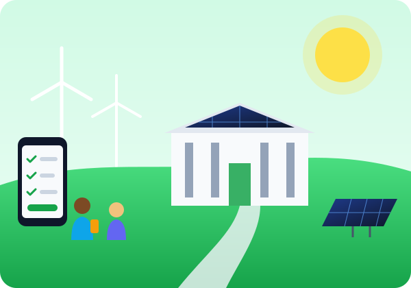

Use AI on purpose, not by default.
You don't have to quit AI to make a difference. Small changes in how millions of students use it add up, and our voices can push universities and tech companies to power it responsibly.

Three levels of action
Start with your own habits, then bring others in, then push the institutions that make the biggest decisions.
1. In your own habits
- Ask first: would a regular search, your notes or the textbook answer this just as well?
- Pick the right size tool. Use smaller, faster models for simple tasks instead of the most powerful one.
- Write one good prompt instead of regenerating the answer over and over.
- Skip AI images just for fun. Generating images and video takes much more energy than text.
- Turn off AI features you don't use in apps and search engines, where possible.
2. With your friends & classes
- Talk about it. Most students have no idea AI has a physical cost. Share what you learned here.
- Share this site with a link or QR code in group chats, clubs and classes.
- Bring it up in class when professors talk about AI policies.
- Join or start a campus sustainability group project on digital footprints.
3. With institutions
- Ask your university to choose AI vendors that run on clean energy and report their water use.
- Push tech companies to publish the energy and water use of their AI products.
- Show up locally. When a data center is proposed nearby, attend public hearings and ask about water, power and jobs.
- Contact representatives to support transparency rules and clean energy requirements for data centers.
Make it personal
Check off the commitments you're willing to make this semester. Your choices are saved in this browser, so you can come back and see your progress.
Why it matters: if 20,000 students each skipped just 5 unnecessary prompts a day for a semester, that could save over 100,000 liters of water and thousands of kilowatt-hours of electricity. Try the numbers yourself in the calculator.
"But does my one prompt really matter?"
"One prompt is tiny."
True, but billions of prompts are sent every day, and the number keeps growing. Big environmental problems are usually made of many small actions added together.
"Isn't AI helping fight climate change?"
It can, for example by improving weather forecasts and power grids. That's exactly why it's worth saving AI's energy for uses that really matter.
"Shouldn't companies fix this?"
Yes, and that's why speaking up is part of the pledge. Companies respond to what their users and customers ask for.
Help other students see the cost of a prompt
Share this site in your group chats, clubs and classes.